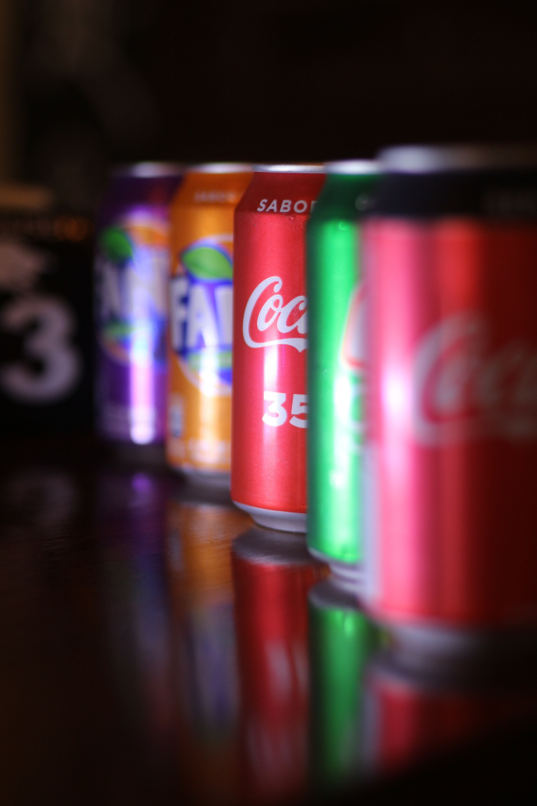

<section id="menu">
    <h2>Our Menu</h2>
    <div class="slider">
      
      
      
    </div>
    <script>
      const images = document.querySelectorAll(".slider img");
      let currentIndex = 0;
      setInterval(function() {
        images[currentIndex].style.opacity = 0;
        currentIndex = (currentIndex + 1) % images.length;
        images[currentIndex].style.opacity = 1;
      }, 3000);
    </script>
  </section>